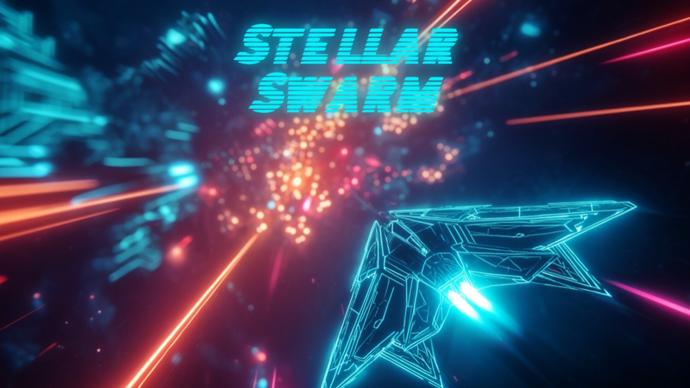

Stellar Swarm
Sobrevive a oleadas de enemigos, mejora tu nave y lleva tu arsenal al límite.
Jugar en CrazyGames ↗JUEGOS PEQUEÑOS · IDEAS GRANDES
Bilbo Studios es un estudio independiente que crea juegos directos, expresivos y hechos para jugar en cualquier momento.
Ver juegos ↓HECHOS PARA JUGAR

Sobrevive a oleadas de enemigos, mejora tu nave y lleva tu arsenal al límite.
Jugar en CrazyGames ↗
Un futbolín arcade de ritmo rápido con partidos, torneos y juego con amigos.
Jugar en CrazyGames ↗EN DESARROLLO
Combate naval multijugador en un océano de islas, tesoros y barcos piratas.